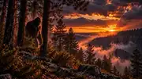

ARIZONA CRYPTID
The Mogollon Monster

The Mogollon Monster is one of Arizona's best-known cryptid legends, tied to the forests, canyons and high country along the Mogollon Rim. For decades, people have reported seeing a large, upright, hairy creature moving through remote wooded areas, often at dusk or after dark.
Descriptions vary, but many accounts share the same basic details: a tall, powerfully built figure covered in dark hair, long arms, a strong odor and a habit of disappearing quickly into thick forest. Other reports focus on heavy footsteps, strange vocalizations or something large moving just beyond the tree line.
The Rim itself helps the legend endure. Dense pine forest, steep ravines, rocky slopes and long stretches of isolated land create the kind of landscape where a story about an unknown creature can take root and survive for generations.
People searching for Arizona Bigfoot, Arizona cryptids or strange creatures in the Southwest often encounter the Mogollon Monster. Roadside Strange treats it as a regional case because reports are spread across a broad area rather than one single location.
Roadside Strange documents reported stories, folklore and unusual history. Paranormal reports are presented as reports, not proof.